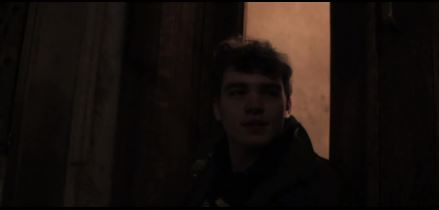

 The stoop isn’t always used for stoop talks though. Sometimes I use it as an escape from my household life, and it’s quite relaxing. If there’s ever a time where I feel overwhelmed in my house I just take a walk downstairs to the stoop. The stoop at night is the best alternative to therapy. Watching the trees swaying to and fro as the sounds of chatter of New York that surrounds you can put most in a hypnotic trance. It drowns out any negative thoughts at the moment and clears your head of everything. Every so often a conversation will take me out of it, but doesn’t take long to get back into the trance though. At the end of the day, no matter how I’ve been feeling, whether it be blissful or gloomy, my stoop is always there to welcome me with open arms.